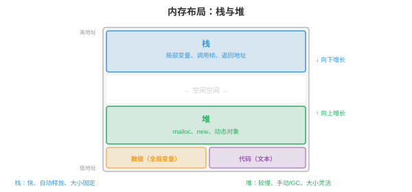
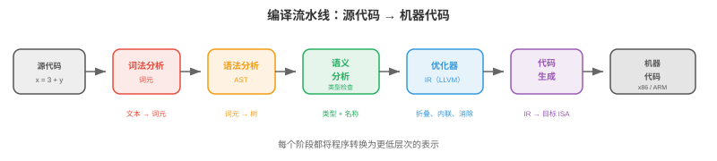

编程语言¶
编程语言是人类意图与机器执行之间的接口。本节涵盖语言范式、类型系统、内存管理策略、编译流水线、解释与 JIT 编译、关键语言特性、领域特定语言和设计权衡。
- 每一段软件、每个机器学习模型、每个操作系统都用编程语言编写。但有数百种语言，各有不同优势。为什么？因为语言设计涉及根本权衡：性能与安全、表达力与简洁、控制与抽象。理解这些权衡有助于你为工作选择正确工具，并理解所处环境的约束。
大白话
编程语言没有“万能冠军”；不同语言是在速度、安全、好不好写和能控制多底层之间做不同取舍。
语言范式¶
- 范式（paradigm）是一种编程风格：一套指导你如何组织代码、如何思考问题的原则。
大白话
范式就是写程序时采用的思路和组织方式，相当于不同的解题套路。
- 命令式（imperative）编程将计算描述为改变状态的一串命令。“将 x 设为 5；为 x 加 3；若 x > 7，则打印它。”C、Python 和 Java 的核心都是命令式。其思维模型是一台拥有内存、你逐步修改它的机器。
大白话
命令式编程像写操作清单：先做什么、再改哪个变量、最后判断什么，程序状态一步步变化。
- 面向对象（object-oriented, OOP）编程围绕对象（objects）组织代码：对象是数据，属性，和行为，方法，的组合。对象通过相互发送消息交互。关键思想是封装（encapsulation），将内部状态隐藏在公共接口之后、继承（inheritance），通过扩展已有类创建新类，和多态（polymorphism），通过共享接口一致地处理不同类型。Java、C++ 和 Python 都支持 OOP。
大白话
OOP 把数据和操作数据的函数绑在一起，外部只通过公开接口使用对象，不必知道内部怎么实现。
- 函数式编程（functional programming, FP）将计算视为数学函数的求值。核心原则包括：不可变性（immutability），数据创建后不改变、纯函数（pure functions），输出仅取决于输入、没有副作用，和一等函数（first-class functions），函数是可作为参数传递、由其他函数返回并保存到变量的值。Haskell 是纯函数式语言；Python、JavaScript 和 Scala 支持函数式风格。
大白话
函数式编程尽量像做数学题：输入相同就得到相同输出，少改共享状态，因此更容易测试和并行。
- 纯函数易于推理、测试和并行化，没有共享可变状态就没有竞争条件。这正是函数式思想日益用于分布式系统和数据流水线的原因。本书始终使用的 JAX 是函数式的：
jax.grad能工作，是因为 JAX 函数是纯函数。
大白话
不到处偷偷改数据，程序行为就更可预测；JAX 正是利用这种纯函数特性来自动求导和变换代码。
- 逻辑编程（logic programming）描述什么应当为真，而非如何计算。你陈述事实和规则，运行时寻找解。Prolog 是经典例子：给出“苏格拉底是人”和“所有人都会死”，引擎便能推导“苏格拉底会死”。逻辑编程用于 AI 知识库和类型检查。
大白话
逻辑编程只声明事实和规则，把“怎么找答案”交给系统推理。
- 大多数现代语言是多范式（multi-paradigm）的：Python 支持命令式、OOP 和函数式；Rust 支持命令式和函数式。范式是工具，不是宗教。
大白话
实际项目常混用多种风格；根据问题选合适工具，比死守一种范式更重要。
类型系统¶
- 类型（type）对值分类，并决定哪些操作有效。整数 3 与字符串 “3” 是不同类型：可以相加整数，却不能相加字符串，虽然可以拼接字符串，但那是不同操作。
大白话
类型像给数据贴标签，标签决定哪些操作合法，能避免把数字和文字胡乱相加。
- 静态类型（Static typing）：类型在程序运行前的编译时（compile time）检查，类型错误会及早发现。C、Java、Rust 和 Go 是静态类型语言。你必须声明类型，或由编译器推断类型：
let x: i32 = 5; // Rust: x is a 32-bit integer
let y: f64 = 3.14; // y is a 64-bit float
// let z = x + y; // compile error: cannot add i32 and f64
大白话
静态类型把一部分错误提前到运行前发现，程序还没上线就能拦住不匹配的类型。
- 动态类型（Dynamic typing）：类型在操作实际执行时的运行时（runtime）检查。它更灵活，但类型错误只有代码运行时才暴露。Python、JavaScript 和 Ruby 是动态类型语言：
大白话
动态类型允许变量换标签，试验很快，但错误可能要等代码真正跑到那一行才暴露。
- 强类型（Strong typing）：语言阻止隐式类型强制转换。Python 是强类型语言：
"3" + 5会抛出 TypeError。弱类型（Weak typing）：语言静默转换类型。JavaScript 是弱类型语言："3" + 5得到"35"，数字被转换为字符串；C 也是弱类型语言，可以把指针转换为整数。
大白话
强类型遇到不兼容数据会直接报错；弱类型可能自作主张帮你转换，方便但容易埋下误解。
- 类型推断（Type inference）让编译器无需显式注解即可推导类型：
let x = 5; // compiler infers: i32
let y = x + 3.0; // compile error: mixed types, even with inference
大白话
类型推断是编译器根据上下文替你补标签，但它不会允许本来就不兼容的类型混在一起。
- 泛型（Generics），参数多态，允许编写适用于任意类型的代码：
fn largest<T: PartialOrd>(list: &[T]) -> &T {
let mut max = &list[0];
for item in &list[1..] {
if item > max { max = item; }
}
max
}
// Works for integers, floats, strings -- any type that supports comparison
大白话
泛型让同一份算法适用于多种类型，只要这些类型都满足算法需要的操作。
- 对机器学习而言，Python 的动态类型加快实验，却会隐藏 bug。生产级机器学习系统日益使用类型提示，
def train(model: nn.Module, lr: float) -> float，和静态分析工具，mypy，在部署前发现错误。PyTorch 和 JAX 用 Python 获得灵活性；TensorRT 和 ONNX Runtime 用 C++ 获得性能。
大白话
Python 适合快速试验，但上线前最好用类型提示和静态检查把隐蔽错误提前找出来。
内存管理¶
- 每个程序都会分配和释放内存。如何管理内存是最具影响力的语言设计决策之一。
大白话
程序用内存放数据，也必须及时归还；语言如何处理这件事会直接影响安全和性能。

- 栈（stack）保存局部变量和函数调用帧。分配很简单，移动栈指针，释放自动完成，函数返回时弹出栈帧。栈访问很快，因为它始终位于缓存中。但栈大小固定，通常为 1-8 MB，并且仅支持 LIFO，后进先出，分配。
大白话
栈像一摞盘子，函数进入时放一层，返回时从最上面拿走；速度快，但空间有限。
- 堆（heap）保存动态分配的数据，对象、数组以及编译时大小未知的字符串。堆分配较慢，需要查找空闲块，且需要显式或自动释放。堆可增长至填满可用内存。
大白话
堆像一间可以按需租用的仓库，能放大对象和未知大小的数据，但找空位、回收空间都更费事。
- 手动内存管理（Manual memory management），C、C++：程序员显式分配，
malloc，和释放，free，堆内存。它提供最大控制力和性能，却极易出错：- 释放后使用（Use-after-free）：访问已释放内存，导致崩溃或安全漏洞。
- 重复释放（Double free）：同一内存释放两次，破坏分配器内部数据结构。
- 内存泄漏（Memory leak）：分配内存却从不释放，程序缓慢耗尽所有可用 RAM。
大白话
手动管理给你最大控制权，但每次借内存都要自己记得归还；忘记或归还两次都会出问题。
- 垃圾收集（Garbage collection, GC）：运行时自动检测并释放不再可达的内存，程序员从不调用
free。
大白话
GC 像清洁工，自动找出程序已经够不着的对象并回收，开发者省心但运行时要付清理成本。
-
追踪 GC（Tracing GC），Java、Go、Python 的循环收集器：定期从“根”，栈变量和全局变量，遍历全部可达对象，并释放不可达对象。它简单，却会造成GC 暂停（GC pauses）：收集器运行时程序停止。现代收集器，Go 的并发 GC、Java 的 ZGC，将暂停时间降至亚毫秒。
大白话
追踪 GC 从仍在使用的“根”一路查找，没查到的对象就能清掉；清理期间程序可能短暂停顿。
-
引用计数（Reference counting），Python 的主要机制、Swift、Objective-C：每个对象跟踪指向它的引用数量。计数降到 0 时，对象立即释放。没有暂停，却无法处理环（cycles），A 引用 B、B 引用 A，二者计数均大于 0，却都不可达。Python 用单独的循环检测器处理它。
大白话
引用计数看“还有几个人指向它”；计数归零就立刻释放，但互相指着的环需要额外检查。
- 所有权（Ownership），Rust：编译器在编译时强制执行内存安全规则，运行时开销为零。
大白话
Rust 把“谁负责归还内存”的规则交给编译器检查，换来无 GC 的内存安全。
-
每个值恰有一个所有者（owner）。所有者离开作用域时，值被丢弃，释放。
大白话
每个值只有一个负责人，负责人离开作用域时，值就自动清理。
-
值可被借用（borrowed），引用，但编译器强制规定：要么一个可变引用，要么任意数量不可变引用，绝不能同时存在。
大白话
可以借给别人看，但不能一边多人读、一边有人改，避免读写冲突。
-
这在编译时防止释放后使用、重复释放、数据竞争和悬垂指针。没有 GC，没有运行时成本。
大白话
许多常见内存和线程错误在编译阶段就被拦下，运行时不用再为垃圾收集付费。
- 借用检查器（borrow checker）是 Rust 的杀手级特性，也是最陡峭的学习曲线。它无需垃圾收集即可保证内存安全和线程安全，因此 Rust 日益用于性能关键系统，操作系统内核、游戏引擎、机器学习推理运行时，如 Candle 和 Burn。
大白话
借用检查器严格但可靠：代码必须证明引用关系安全，换来系统级性能和更少的运行时崩溃。
编译流水线¶
- 编译器（compiler）在程序运行前将源代码翻译为机器代码，或另一种目标语言。流水线包含多个阶段：
大白话
编译器像翻译工厂，先读懂源代码，再检查、优化，最后生产目标机器能执行的形式。

- 词法分析（Lexing），词元化：将源文本转换为词元流。
x = 3 + y变成[IDENT("x"), EQUALS, INT(3), PLUS, IDENT("y")]。词法分析器去除空白和注释。
大白话
词法分析先把字符切成有意义的“词”，类似把句子拆成单词、数字和符号。
- 语法分析（Parsing）：从词元流构建抽象语法树（Abstract Syntax Tree, AST）。AST 表示程序的层级结构。
3 + y * 2被解析为Add(3, Mul(y, 2))，乘法优先级更高。语法分析器在此检查语法：不匹配的括号和缺失的分号。
大白话
语法分析把词元组装成树，明确谁先算、谁包含谁，并找出括号或分号这类结构错误。
- 语义分析（Semantic analysis）：检查类型、解析变量名、验证函数调用参数是否正确。静态类型检查在此发生，输出是带类型与注释的 AST。
大白话
语义分析检查代码“意思上说不说得通”，例如变量是否存在、参数类型是否匹配。
- 优化（Optimisation）：在不改变行为的前提下转换程序使其运行更快。常见优化包括：
- 常量折叠（Constant folding）：在编译时计算
3 + 5，将其替换为8。 - 死代码消除（Dead code elimination）：移除永远不会执行的代码。
- 循环展开（Loop unrolling）：用重复的内联代码替换循环，减少分支开销。
- 内联（Inlining）：用函数体替换函数调用，消除调用开销。
- 常量折叠（Constant folding）：在编译时计算
大白话
优化是在结果不变的前提下改写代码，让它少做无用功、少跳转、少调用。
- 代码生成（Code generation）：将优化后的表示转换为目标机器代码，x86、ARM，或中间表示。
大白话
代码生成把已经检查和优化好的程序，翻译成具体 CPU 或运行时真正能执行的指令。
- LLVM是主导的编译器基础设施。它提供通用中间表示，LLVM IR，许多语言都编译到该表示。LLVM 的优化器作用于该 IR，其后端为多个目标生成机器代码。Clang，C/C++、Rust、Swift、Julia 和其他许多语言都使用 LLVM。这意味着 LLVM 优化器的改进会同时让所有这些语言受益。
大白话
LLVM 像共享的编译平台：不同语言先变成统一中间形式，再由同一套优化和后端生成不同 CPU 的代码。
解释与 JIT 编译¶
- 解释器（interpreter）逐行，或逐语句，执行程序，不产生机器代码。这使启动快、开发可交互，却使执行较慢，每一行每次运行时都要重新分析。
大白话
解释器边读边执行，启动和试错方便，但每次运行都要付理解代码的成本。
- 大多数解释型语言实际会编译为字节码（bytecode）：一种比源代码简单、但不针对特定机器的中间表示。字节码运行在虚拟机（virtual machine, VM）上。
大白话
字节码是介于源代码和机器码之间的通用指令，交给虚拟机执行，同一份字节码可以跨平台。
-
CPython，标准 Python 实现，将 Python 源代码编译为字节码，
.pyc文件，由 CPython VM 运行。VM 每次解释执行一条字节码指令。这是 Python 在计算密集任务上比 C 慢约 100 倍的原因。大白话
CPython 先把 Python 变成字节码，再由虚拟机逐条解释，所以纯 Python 循环通常比 C 慢很多。
-
JVM，Java 虚拟机：Java 编译为 JVM 字节码，
.class文件。JVM 初始解释字节码，随后将频繁执行的代码路径，即“热点”，JIT 编译（JIT-compiles）为原生机器代码。这是 Java 启动比 C 慢，解释开销，但长期运行时可接近 C 速度，JIT 优化热点，的原因。大白话
JVM 先解释着跑，发现某段代码很热门后再把它编成机器码；启动慢一点，长期运行可以很快。
- JIT（Just-In-Time）编译在运行时将代码编译为机器代码，利用仅在执行期间可得的信息。JIT 可依据实际运行时数据优化：若函数始终以整数参数调用，JIT 会生成专门的纯整数机器代码，跳过类型检查。
大白话
JIT 等程序跑起来后再观察真实情况，针对常见路径生成专用快代码。
- PyPy是带 JIT 编译器的替代 Python 实现。它通过 JIT 将热点循环编译为机器代码，可使大多数 Python 代码比 CPython 快 5-10 倍。然而，它与 C 扩展模块，NumPy、PyTorch，的兼容性有限，因此在机器学习中的使用受限。
大白话
PyPy 能把热点 Python 代码编快，但和大量 C 扩展的兼容性不如 CPython，所以机器学习里不一定适合。
- 从解释到编译的光谱不是二元的：
- 纯解释：Bash shell 脚本。
- 字节码解释：CPython。
- 字节码 + JIT：JVM、.NET CLR、LuaJIT、PyPy。
- 提前（Ahead-of-time, AOT）编译：C、C++、Rust、Go。
- AOT + 运行时代码生成：JAX 的
jax.jit在首次调用时将 Python 函数编译为优化的 XLA 代码，随后缓存已编译版本。
大白话
“解释型”和“编译型”不是两格开关，而是一条连续谱；很多系统会先解释、再编译热点，或在运行时生成代码。
关键语言特性¶
- 闭包（Closures）：捕获其外围作用域中变量的函数。该函数“闭合于”定义它的环境：
def make_adder(n):
def add(x):
return x + n # n is captured from the enclosing scope
return add
add5 = make_adder(5)
print(add5(3)) # 8
大白话
闭包会把定义时用到的外部变量一起带走，所以函数返回后仍记得当时的环境。
- 闭包是回调、装饰器和偏应用背后的机制，也是函数式编程的基础。
大白话
回调和装饰器之所以能“记住配置”，通常就是因为背后有闭包保存上下文。
- 模式匹配（Pattern matching）：一种强大的控制流机制，可解构数据并按其形状分支：
match value {
Some(x) if x > 0 => println!("Positive: {}", x),
Some(0) => println!("Zero"),
Some(x) => println!("Negative: {}", x),
None => println!("Nothing"),
}
大白话
模式匹配先看数据长什么样，再按不同形状进入对应分支，比堆很多 if-else 更系统。
- 模式匹配比 if-else 链更有表达力：它检查数据结构，它是 Some 还是 None？是否含有满足条件的值？，而非仅检查相等性。Python 在 3.10 中加入结构化模式匹配，
match/case。
大白话
它不仅比较一个值是否相等，还能同时拆开数据并检查内部条件。
- 代数数据类型（Algebraic data types, ADTs）：可为多个变体之一的类型，每个变体携带不同数据。
Result类型要么是Ok(value)，要么是Err(error)；Tree要么是Leaf(value)，要么是Node(left, right)。ADT 与模式匹配结合，可穷尽处理所有情形，消除整类 bug，空指针异常、未处理的错误码。
大白话
ADT 把“可能出现的几种情况”明确列出来，配合模式匹配逐一处理，少漏掉异常分支。
- 特征与接口（Traits and interfaces）：定义类型必须实现的一组方法，但不指定如何实现。这启用多态：接受“实现了 Display trait 的任何对象”的函数可处理整数、字符串和自定义类型。Rust 使用 trait，Java 使用接口，Go 使用隐式接口，Python 使用鸭子类型，“如果它走起路来像鸭子……”。
大白话
接口只规定“必须会哪些动作”，不管内部怎么做；只要满足接口，函数就能统一使用不同对象。
领域特定语言¶
- 领域特定语言（domain-specific language, DSL）为特定问题领域设计，在该领域中以通用性换取表达力。
大白话
DSL 不求什么都能做，而是把某一类问题写得特别直接、特别清楚。
- SQL：关系数据库语言。
SELECT name FROM users WHERE age > 30比等价的命令式循环更可读、更易优化。数据库引擎优化查询执行计划，自动选择连接策略和索引使用方式。
大白话
SQL 只描述“要哪些数据”，数据库负责决定怎样查，开发者不用手写遍历和索引细节。
- 正则表达式（Regular expressions）：用于文本模式匹配的微型语言。
\d{3}-\d{4}匹配如 “555-1234” 的电话号码。正则引擎将模式编译为有限自动机，以实现高效匹配。
大白话
正则表达式是一套专门描述文字形状的简短规则，适合找格式相似的文本。
- 着色器语言（Shader languages），GLSL、HLSL、Metal Shading Language：运行在 GPU 核心上、计算像素颜色、顶点位置或计算操作的程序。着色器是大规模并行的：每次调用独立处理一个像素或一个元素。这与 CUDA 用于机器学习计算的执行模型相同。
大白话
着色器是交给 GPU 大量并行执行的小程序，每个线程通常负责一个像素或一个数据元素。
- 在机器学习中，PyTorch 和 JAX 等框架本质上是嵌入 Python 的张量计算 DSL。它们提供领域特定抽象，张量、自动微分、设备放置，同时利用 Python 生态系统。
大白话
PyTorch 和 JAX 让你用 Python 写高层张量操作，底层再把这些操作交给高效的计算内核。
语言设计权衡¶
- 没有语言在所有方面都是最好的。设计就是选择做哪些权衡：
大白话
选语言就是选取舍：某方面更强，往往意味着另一方面要付出代价。
- 性能与安全（Performance vs safety）：C 提供原始速度与硬件控制，却允许破坏内存；Rust 以编译时内存安全提供相近速度；Java 通过垃圾收集开销换取内存安全；Python 以慢 100 倍的执行换取最高安全性和表达力。
大白话
越接近硬件通常越快但越容易犯内存错误；越强调自动保护，开发更省心，运行时可能更有开销。
- 表达力与简洁（Expressiveness vs simplicity）：Haskell 的类型系统可表达非常精确的约束，却有陡峭学习曲线；Go 为简洁而有意省略泛型，直到最近才加入、继承和异常；Python “应当有一种显而易见的做法”的哲学使语言易学。
大白话
语言功能越丰富，能表达的东西越细，但学习和理解成本也会上升；简洁语言则更容易上手。
- 控制与抽象（Control vs abstraction）：C/C++ 让你控制内存布局、缓存行为和硬件交互；Python 隐藏所有这些。对机器学习训练，GPU 计算占主导，Python 开销可忽略；对机器学习推理，每微秒都重要，可能需要 C++ 或 Rust。
大白话
抽象帮你少操心，底层控制让你能榨出最后一点性能；训练和推理对这两者的侧重点不同。
- 编译速度与运行速度（Compilation speed vs runtime speed）：Go 数秒内编译，类型系统简单、优化少；Rust 数分钟编译，类型系统复杂、优化激进。这是在开发者迭代速度与部署性能间的权衡。
大白话
编译快能让开发者频繁试错，编译慢但优化强则可能换来更快的上线程序。
- 机器学习生态系统体现了这些权衡：Python 用于实验与训练，表达力胜出；C++/CUDA 用于内核与推理，性能胜出；Rust 用于基础设施和安全关键系统，安全胜出。
大白话
实际工程常常分工合作：Python 负责灵活编排，C++/CUDA 负责极致计算，Rust 负责可靠的底层基础设施。
编程任务（使用 CoLab 或 Notebook）¶
-
探索闭包与高阶函数。实现简单函数工厂，并验证闭包捕获其环境。
def make_multiplier(factor): """Returns a function that multiplies by factor.""" def multiply(x): return x * factor return multiply double = make_multiplier(2) triple = make_multiplier(3) print(f"double(5) = {double(5)}") # 10 print(f"triple(5) = {triple(5)}") # 15 # Closures capture by reference, not by value def make_counter(): count = [0] # mutable container to allow modification def increment(): count[0] += 1 return count[0] return increment counter = make_counter() print(f"counter() = {counter()}") # 1 print(f"counter() = {counter()}") # 2 print(f"counter() = {counter()}") # 3 -
比较动态与静态类型行为。展示 Python 的动态类型如何允许灵活性，却可能隐藏 bug。
def add(a, b): return a + b # Works with different types -- flexible! print(add(3, 5)) # 8 (int + int) print(add("hello ", "world")) # "hello world" (str + str) print(add([1, 2], [3, 4])) # [1, 2, 3, 4] (list + list) # But type errors only surface at runtime: try: print(add("hello", 5)) # TypeError! str + int except TypeError as e: print(f"Runtime error: {e}") print("A static type checker would catch this before running") -
为计算密集型任务测量解释型 Python 与编译/JIT 方法的性能差异。
import time import jax import jax.numpy as jnp n = 1_000_000 # Pure Python loop (interpreted) start = time.time() total = 0.0 for i in range(n): total += i * i python_time = time.time() - start # JAX (compiled via XLA) @jax.jit def sum_squares_jax(n): return jnp.sum(jnp.arange(n, dtype=jnp.float32) ** 2) _ = sum_squares_jax(10) # warm up JIT start = time.time() result = sum_squares_jax(n) jax_time = time.time() - start print(f"Python loop: {python_time:.4f}s") print(f"JAX (JIT): {jax_time:.6f}s") print(f"Speedup: {python_time / jax_time:.0f}x")